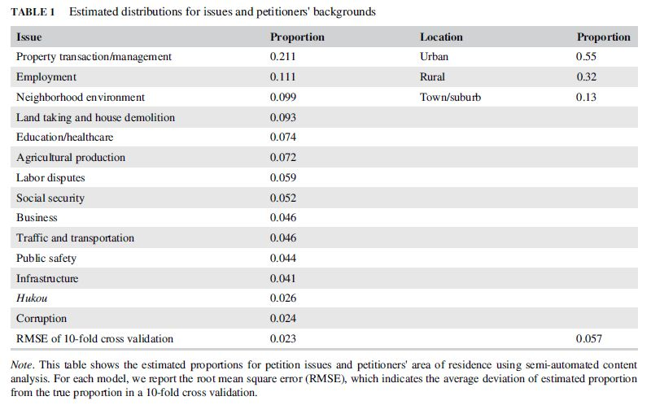
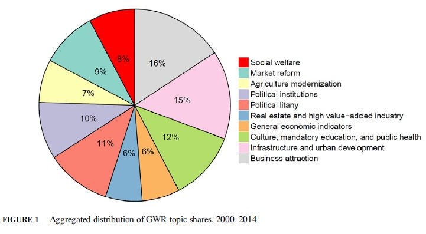
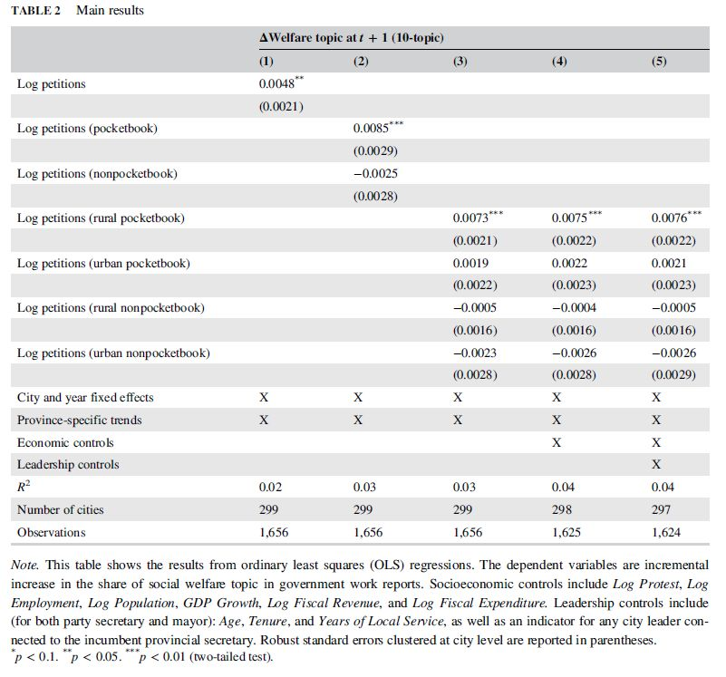
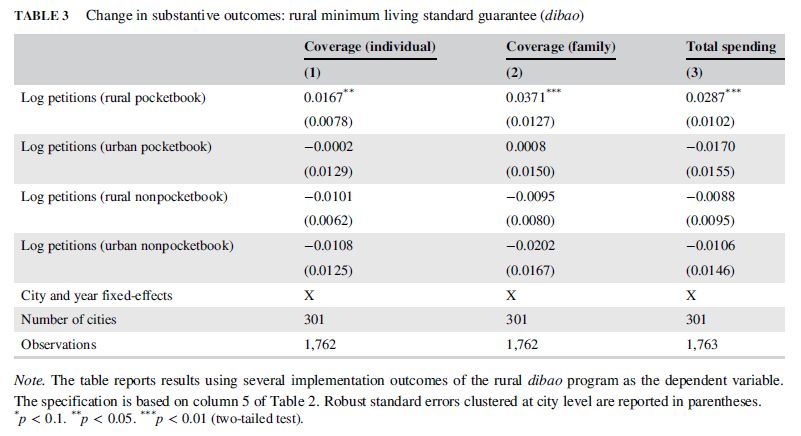

从互联网到社会安全网：中国网络参与的政策后果
原创 政文观止
政文观止Poliview
微信号 zhengwenguanzhi
功能介绍 从一群年轻人的视角出发，专业、专注、专解海内外比较政治经济研究的前沿佳作。
__发表于
文献来源： Jiang J, Meng T, Zhang Q. From Internet to social safety net: The policy consequences of online participation in China. Governance. 2019;1–16.
作者简介：
蒋俊彦：香港中文大学政治与行政学系助理教授
孟天广：清华大学政治学系副教授
张庆：哥伦比亚大学经济学系博士候选人
电子技术的进步推进了治理的现代化，在过去的20年间，世界范围内多个国家的中央和地方政府都建立起了以互联网为基础的平台来与民众保持沟通。在日本、美国、中国、哥伦比亚、乌克兰等国，网络参与（也作“电子参与”）已经成为公民联系政府并表达他们诉求与不满的最常见方式。由此，网络参与的兴起催生了许多围绕于此的学术探讨。尽管这些探讨对互联网扩大公民参与、提高政府回应性以及促进政府决策的透明化和平等化保持乐观态度，但是互联网是否真的能有效地推动政策变化仍然受到学者质疑。因此，在这篇文章中，三位作者通过对中国网民在地方领导留言板（Local Leader Message Board， LLMB）上的留言进行分析，为网络政治参与推动政治平等、削弱不同群体间政治影响力的差异，尤其是对弱势群体有补偿效应提供了新的证据。
作者首先简要地回顾了中国政府推进电子政务的建设历史，自2002年中共十六大提出打造“电子政府”以来，截至2008年所有县级及县级以上的地方政府都建立了自己的网站并提供不同类型的公共服务。同样也是在2008年，中国中央媒体人民网率先建立了地方领导留言板。这些地方领导留言板按照33个省级行政区、333个地市级行政区以及2000多个县级行政区进行划分，每个层级的留言板上都显示该层级的两位主要领导——当地党委书记和当地政府负责人。民众可以通过匿名或者实名的形式在留言板反映情况。除却与地方政府职权不相干的留言外，所有与当地政府职能相关的留言都被公开展示，这有利于反映相近情况的民众能准确找到相关负责部门，也有利于中央政府对地方政府实行监督。不仅如此，到2009年，全国（不包括港澳台地区）有超过90%的行政村以上的单位都覆盖了网络，而2016年全国范围内有87%的农村居民可以使用手机上网。相比其他与政府进行沟通的方式，网民在留言板上的留言能最大程度的节省时间和降低成本。因此，这一平台最终成为普通民众反映情况和发牢骚的主要平台。
至此，作者提问：究竟是哪些群体的公民热衷在留言板留言？又是哪些政策的后果受到了网民参与的影响？为了回答这些问题，作者首先采集了留言板中共计约900000条的留言，同时记录了这些留言的主题、发布时间、居民反映问题的领导以及政府是否进行了回复等等。接下来，作者随机选取了其中3500条并在2名研究助理的协助下阅读了每一条留言，之后将这些留言划分为成14个议题类型并将留言来源归属到3个地区（城市、乡村以及城镇/郊区）。结合这些人工标注，作者使用由Hopkins和King首创的文本分析方法估计了全部留言中议题和来源地的比例， 结果如表1所示，从中可见农村网民留言比例和涉及低收入人群关切的留言比例相当大。

接下来，作者搜集了2000-2014年间4400余份从省到城市地方政府的政府工作报告的全部文本，并使用了Latent Dirichlet Allocation(LDA)模型识别其中各类议题所占篇幅比例（图1所示）：

由此作者选定10个议题作为基准模型，并选定20个议题做稳健性检验。这些模型显示，社会福利议题（社会保障、养老保险、医疗保险、社会保险等）约占地方政府工作报告8%的篇幅。方差分解表明，社会福利议题所占篇幅的方差63%体现于城市内年与年之间的差异，剩余37%体现于不同城市之间的差异，可见政府政策导向随时间变化较大。接下来，作者建立如下固定效应模型作为基准：
ΔWelfare Topic Sharei, t + 1 = δLog Petitionsit + Xitβ + Φi + τt + εit
在上述模型中，i代表城市，t代表年份，因变量ΔWelfare Topic Sharei, t + 1 表示前一年城市政府工作报告中关于福利议题增加的比重。自变量Log Petitions是当年城市网民留言数的加总之和，这些留言不仅包括网民直接在当地城市留言板上的留言，也包括在能监督该市工作的省政府留言板上的留言，这为检验何种类型的留言最能影响政策提供了机会。Φ和τt则分别代表城市和年份的固定效应，Xit则对丰富的时间变异情况加以控制。此外，作者在主要回归中还纳入了省级层面的线性趋势，以消除随时间变化的省级因素造成的潜在偏误。
与此同时，作者指出，先前研究发现中国低收入阶层也通过线下抗议的形式来表达不满，因为大规模抗议能引起当局的重视，甚至有时能推动政府政策的转变。有鉴于此，作者选取了两大数据库为另一数据来源，其中第一个数据库是中国社会科学院建设的群体性事件数据库，该数据库收录了2007-2013年间中国内地有关群体性事件的详细信息，并且也纳入了相关政府文件和国内外媒体的相关报道。第二个数据库则是China Strikes数据库(http://www.chinastrikes.crowdmap.com/)，该数据库特别关注劳资纠纷中的具体案例。作者将数据库中所有发生的事件对应到城市- 年份当中去并作控制变量使用。
除此之外，作者将城市人口（Log Population）、就业规模（Log Employment）、地方GDP（LogGDP）、GDP增长率以及地方财政收入（Log Fiscal Revenue）以及财政支出（Log Fiscal Expenditure）设定为控制变量，同时对地方领导（书记市长）的个人特征，包括年龄、任职时长与省级领导的关系等也加以控制。
回归的基准结果如表2所示，其中第1列展示的是基准模型，它分别控制了固定效应与线性省级趋势，可以看出，网络上的留言与政府政策中对福利强调的比重呈密切的正相关关系。具而言之，网民留言每增加1个标准差，政府在报告中对福利政策强调的比重就增长0.48%（0.17个标准差）。第2列区分了留言内容是否关乎“钱袋子”问题。第3列进一步带入了留言网民的归属地区，而第4列和第5列则增加了对社会经济变量和领导特征变量的控制。上述回归结果支持了作者的绝大多数假设：相较于其他议题，“钱袋子”问题对政府福利政策的影响力更大，其中来自农村地区网民发挥的作用最显著。来自城市地区网民对“钱袋子”问题的留言对政府福利政策的比重没有产生统计上显著的影响，这进一步表明由于城市居民有更多渠道向政府传递信息，留言板主要担当了反映农村舆情的角色。

随后，作者用20个主题的LDA模型识别出的福利议题对先前的主要结果做稳健性检验，发现先前得出的主要结论依然不变。同时，作者也发现政府工作报告中福利议题所占比重与当年留言及下年留言并无明显关系，而只与上年留言有关，这降低了反向因果（政府福利政策引发更多留言）的可信度。作者还使用一项工具变量回归加强了结论因果性的可信度。
前面分析已经证实乡村网民对“钱袋子”的关心将促使政府对福利政策投入更多的精力。尽管如此，文件中的政策能否真正落地实施却又是另外一回事。为了进一步检验，作者以居民低保为例指出，如果较低收入网民对“钱袋子”的留言真能对政府施加影响，那么反馈的结果将是低保支出的增加。作者通过民政部网站搜集了城市层面低保覆盖的数据并将其与网民的留言关联，表3分别包括了个人层面低保的覆盖、家庭层面低保的覆盖与低保总开支，回归分析显示二者之间呈显著的正相关关系。此外，作者通过工具变量的分析结果也与先前结论大体相似。这显示中国网民的政治参与确实推动了分配的平等化。

最后作者总结道，既有对政治参与的定义虽然经典但是却有局限性，原因在于忽视了互联网参与的作用。因此，学界对网络政治参与如何影响政府政策的研究依然有限。事实上，作为20世纪最有影响力的发明，互联网不仅能促进回应性政府建设的加强，而且使得公民在政治参与中发能挥出更大的影响，减少公民参与和政治影响力的不平等。这篇文章正是通过对中国官方建立的最大网上留言平台的研究为网民参与的政策效应提供了新的证据。随着宽带网的普及，即便是社会下层群体也能积极地借助互联网来表达他们的利益，并且他们的参与能推动地方政府更优先地考虑社会福利议题。此外，作者也强调，本文推进了对互联网与中国政权韧性之间关系的研究。网民参与和政治稳定之间并非零和关系，互联网也可以在避免剧烈制度变迁的同时敦促政府提高治理质量。
编译：杨端程
编辑：吴温泉
感谢蒋俊彦教授、孟天广教授和张庆博士三位作者拨冗审定！


政文观止
微信扫一扫赞赏作者 __赞赏
已喜欢，对作者说句悄悄话
取消 __
发送给作者
发送
最多40字，当前共字
上一页 1/3 下一页
长按二维码向我转账
受苹果公司新规定影响，微信 iOS 版的赞赏功能被关闭，可通过二维码转账支持公众号。
预览时标签不可点
个
上一篇 下一篇
微信扫一扫
关注该公众号
微信扫一扫
使用小程序
： ， 。 视频 小程序 赞 ，轻点两下取消赞 在看 ，轻点两下取消在看